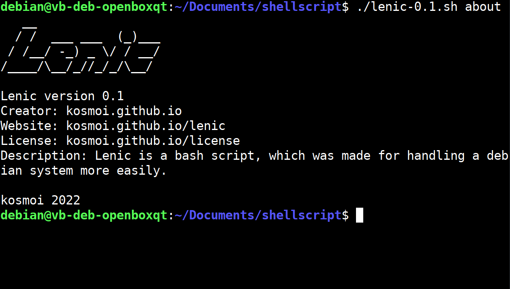
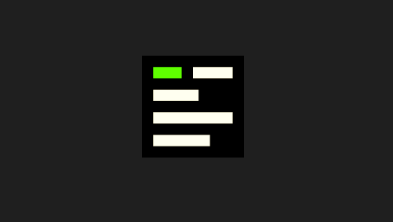
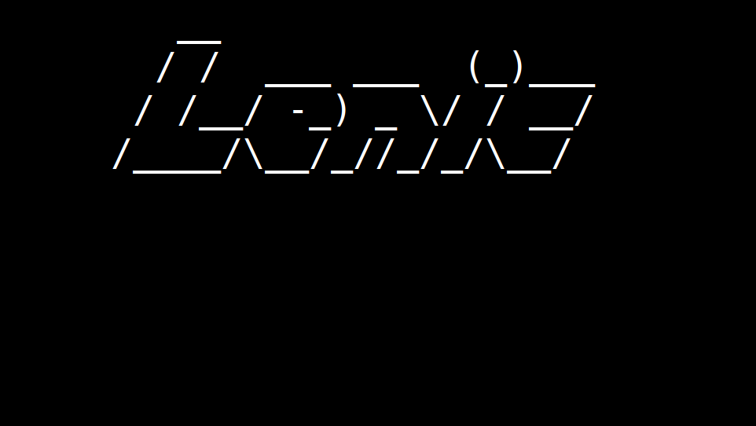

1 / 3

"You just download the shell script and then wonder, why you need a tool doing things you get already done by yourself."
2 / 3

"I mean, this script will probably change the whole world - ...but not a lot."
3 / 3

"Lenic stands for "little executable non-sence interactive console""
❮
❯